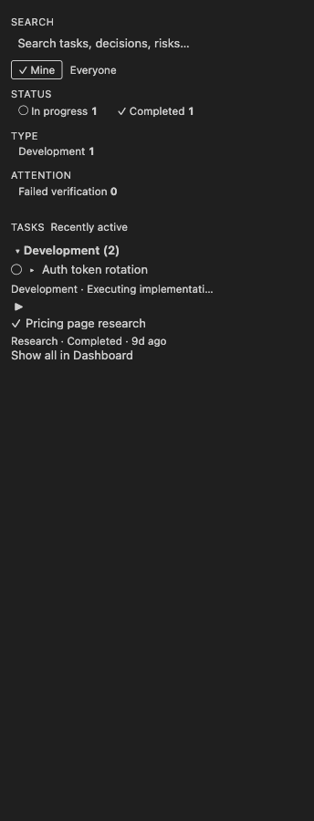
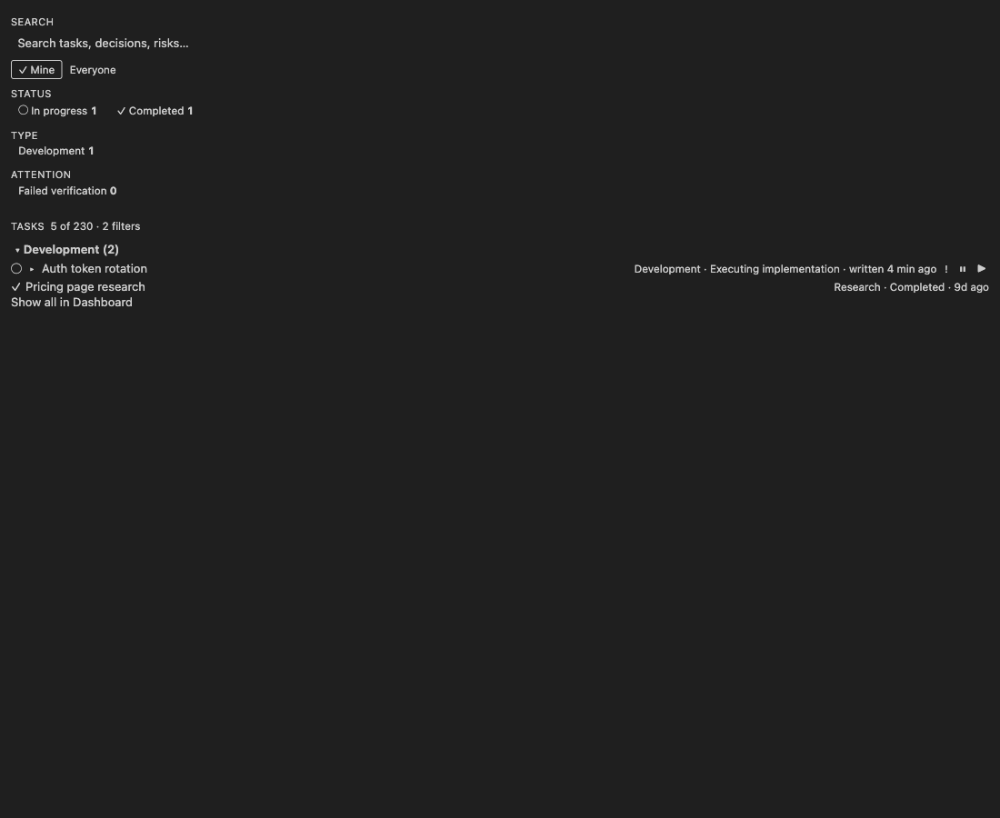
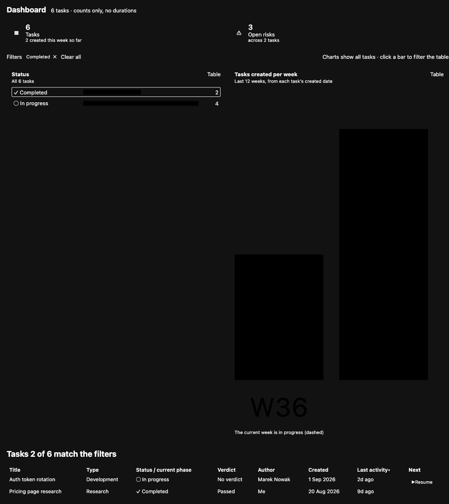
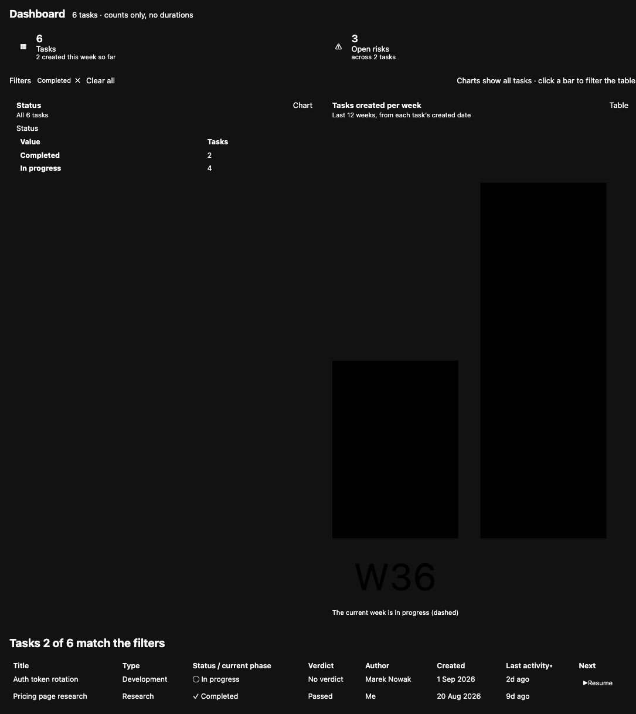
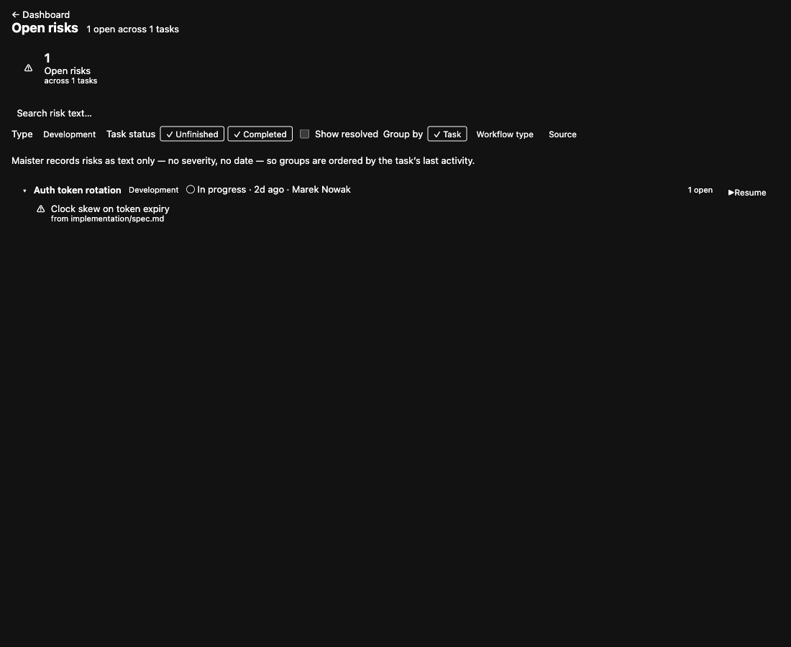

Test Environment
| Base URL | http://localhost:8777/ — a static server over a scratch dir holding the five generated shell documents, dist/webview/*.js and media/webview.css. No app server exists. |
|---|
| Browser | Chromium via Playwright MCP |
|---|
| Viewport | 250×900 and 400×900 (sidebar), 1100×900 (panel) |
|---|
| Auth context | n/a — bundles render from one posted payload; no auth surface |
|---|
| Test data | Fixtures exported by test/dom/harness.ts, plus two payload variants posted at runtime |
|---|
Verification Scenarios
4.1 Overview renders at sidebar width with no console errors — ✅ Passed
§ 4.2 Overview webview · AC8, AC14 · viewport 400×900
| # | Action | Expected | Actual | Status |
|---|
| 1 | Navigate to overview.html | Bundle boots, posts ready, renders | Rendered; __posted held ready | ✅ |
| 2 | Read console | No implementation errors | 1 entry — favicon.ico 404 from the static server only | ✅ |
| 3 | Read accessibility snapshot | Search → Scope → Status → Type → Attention → Tasks → groups → Show all in Dashboard | Exactly that order | ✅ |
| 4 | Inspect row anatomy | One ▶ per actionable row, none on completed research | Confirmed | ✅ |

4.2 Overview at 250 px — no visible horizontal overflow — ⚠️ Passed with issues
standards/frontend/responsive.md · group 5's "0 horizontal overflow at 250 px and 400 px" claim
| # | Action | Expected | Actual | Status |
|---|
| 1 | Resize to 250 px | Layout reflows, content legible | Reflowed; description truncates with ellipsis | ✅ |
| 2 | Measure scrollWidth | == 250 | 344 | ❌ |
| 3 | Identify the overflowing box | none | one 1×1 .sr-only span at x≈344 | ❌ |
| 4 | Check for a user-visible scrollbar | none | none — body is overflow-x:hidden | ✅ |
Issue: COS-1. The full-page capture below is 344 px wide; everything past 250 px is empty.

4.3 Overview filtered state and row markers — ✅ Passed
§ 4.2 list header and row markers · payload amended at runtime
| # | Action | Expected | Actual | Status |
|---|
| 1 | Post filtered payload | Tasks 5 of 230 · 2 filters | Matches the mockup's copy exactly | ✅ |
| 2 | Inspect row 1 | Markers render with their hidden words | !failed verification, ⏸quiet 5 days | ✅ |

4.4 Task fallback view — all § 5.4 sections in order — ⚠️ Passed with issues
§ 5.4 · AC6 · viewport 1100×900
| # | Action | Expected | Actual | Status |
|---|
| 1 | Read heading order | Phases → Key artifacts → Decisions → Risks → All artifacts → Raw state | Exactly that, after banner and header | ✅ |
| 2 | Read the meta line | type · status with glyph · author · verification · dates · parse issues | Glyph absent; every other field exact | ❌ |
| 3 | Inspect the status span | glyph (aria-hidden) + word | <span>Status: In progress<span class="sr-only">In progress</span></span> | ❌ |
| 4 | Inspect phases | glyph + {n} · {name} + status word | Correct glyph+word pattern | ✅ |
| 5 | Inspect risks | open first, resolved struck through and labelled | Confirmed | ✅ |
| 6 | Inspect the Risks heading | entry point into Risks mode | <h2><button> named "Show the risks of … in the Risks view" | ✅ |
Issues: MIN-1, MIN-2.

4.5 Artifact reader — summary card, skip link, hero chips — ✅ Passed
§ 6.3 · AC5
| # | Action | Expected | Actual | Status |
|---|
| 1 | Read document order | skip link → breadcrumb → hero chips → summary aside → main#doc | Exactly that; skip link first in tab order | ✅ |
| 2 | Inspect hero chips | current chip aria-pressed | Implementation Plan pressed | ✅ |
| 3 | Inspect the summary card | TL;DR → Key decisions → Open questions & risks → checklist | Exact; checklist is the card's last child | ✅ |
| 4 | Inspect the resolved risk | struck through with a visible label | <s> + Resolved chip | ✅ |

4.6 Dashboard mode — KPIs, charts, table — ✅ Passed
§ 5.5 · AC8, AC17
| # | Action | Expected | Actual | Status |
|---|
| 1 | Read the KPI row | glyph + value + label + context, never colour alone | Confirmed; the Open-risks tile is a named button | ✅ |
| 2 | Read the filter bar | chips with remove · Clear all · charts note | Exact | ✅ |
| 3 | Read the table header | Title · Type · Status/current phase · Verdict · Author · Created · Last activity · Next | Exact match, in order; sortable headers are buttons | ✅ |
| 4 | Read the table body | charts count all tasks; only rows filtered | Bars sum to 6; 2 rows; "Tasks 2 of 6 match the filters" | ✅ |
| 5 | Inspect row 1's Next cell | one next-action control, distinct from the title | Confirmed | ✅ |
Issue: COS-3. KPI order, glyphs and tones verified against src/panel/panel.ts:730-767 — ◈ blue, ✕ red, ⏸ orange, ⚠ purple, identical to the § 5.5 table.

4.7 Dashboard chart → data-table toggle — ✅ Passed
§ 5.5 Table control · accessibility: colour never the only encoding
| # | Action | Expected | Actual | Status |
|---|
| 1 | Activate the Status card's Table control | real table with scoped headers | Completed 2, In progress 4 | ✅ |
| 2 | Compare numbers to the bars | identical | Identical | ✅ |
| 3 | Read the control after toggling | offers Chart | Label flipped | ✅ |

4.8 Twelve-week chart geometry — ✅ Passed
§ 5.5 "Tasks created per week"
| # | Action | Expected | Actual | Status |
|---|
| 1 | Post 12 weeks | wider than tall, fits the card | viewBox="0 0 480 130", rendered 505×137 px | ✅ |
| 2 | Read the accessible name | enumerates all twelve counts | "…last 12 weeks: W26 3, W27 7, …" | ✅ |
| 3 | Read the footnote | current week in progress | "The current week is in progress (dashed)" | ✅ |
The ~810 px tall chart in scenario 4.6's capture is a fixture artifact — viewBox width is weeks.length × 40, and production always publishes twelve weeks. Not a defect.

4.9 Risks mode — default state and Show resolved — ✅ Passed
§ 5.7 · AC18
| # | Action | Expected | Actual | Status |
|---|
| 1 | Read the default heading | {open} open across {k} tasks, no resolved clause | 1 open across 1 tasks — clause absent, per the ruled mockup defect | ✅ |
| 2 | Read the filter bar | search · Type · Task status · Show resolved · Group by | Exactly that order | ✅ |
| 3 | Count rendered rows | resolved hidden | 0 | ✅ |
| 4 | Check Show resolved | one struck, labelled row; heading gains the clause | Both confirmed | ✅ |
| 5 | Read the group header | title · type · status/activity/author · {n} open · next action | Exact; disclosure and title are separate controls | ✅ |
| 6 | Read a risk's source line | from {path} opening the reader | Button named "Open implementation/spec.md" | ✅ |
Issues: COS-2, COS-4.


4.10 Accessibility and regression confirmation — ✅ Passed
AC14 (DOM half) · standards/frontend/accessibility.md
| # | Action | Expected | Actual | Status |
|---|
| 1 | npm run test:dom | green on freshly built bundles | 7 passed in 1.4 s | ✅ |
| 2 | Live focusable probe (Dashboard) | only button/a/input, all named, no positive tabindex | 15 controls, 0 unnamed, 0 disallowed, 0 positive | ✅ |
| 3 | Overview accessibility snapshot | named facet groups, aria-pressed toggles | Scope / Status / Type / Attention groups; Mine pressed | ✅ |
Issue: MIN-2 — one redundant sr-only duplicate on the fallback surface, outside what the DOM suite asserts.
Discrepancies
Critical: none. Major: none.
Minor MIN-1 — the fallback header never renders the status glyph the payload carries
| Spec requirement | screen:task-fallback-view mockup header: Status: ◯ In progress. FallbackPayload.statusGlyph is declared at src/webview/fallbackTask.ts:54 and populated at src/panel/panel.ts:1246. |
|---|
| Expected | An aria-hidden glyph span before the status word, as dashboardMode.ts:451 and risksMode.ts:360 draw the same value. |
|---|
| Actual | fallbackTask.ts:129-134 emits the formatted string plus hidden(payload.statusText) and nothing else. statusGlyph has no reader anywhere in the bundle. |
|---|
| Evidence | screenshots/03-fallback-task-view.png; live DOM read of p.fb-meta |
|---|
| Root cause hypothesis | A dropped glyph(payload.statusGlyph) call — the phase rows in the same file use the glyph+word pattern correctly, and the payload field is otherwise dead. |
|---|
| User impact | The fallback view is the one surface where status is not scannable by glyph, so it reads differently from Overview, Dashboard and Risks. Also leaves an unused payload field, which minimal-implementation.md calls debt. |
|---|
| Recommended fix | Prepend glyph(payload.statusGlyph) to the status span; or delete statusGlyph and its producer if the omission is deliberate. |
|---|
| Workaround | None needed — the status word is present, so no information is lost. |
|---|
Minor MIN-2 — the fallback header duplicates the visible status word into an sr-only span
| Spec requirement | standards/frontend/accessibility.md — hidden text supplements a glyph that carries meaning; it does not repeat visible text. |
|---|
| Expected | A screen reader announces "Status: In progress" once. |
|---|
| Actual | Computed accessible text is "Status: In progress In progress". |
|---|
| Evidence | Live DOM read of p.fb-meta |
|---|
| Root cause hypothesis | The same dropped glyph() call as MIN-1 — hidden() is the correct partner for an aria-hidden glyph and became redundant once the glyph was not drawn. |
|---|
| User impact | Screen-reader users hear the status stuttered on every task fallback view. |
|---|
| Recommended fix | Fixing MIN-1 makes hidden() correct again; otherwise drop the call. |
|---|
| Workaround | None needed — content is correct, only repeated. |
|---|
Cosmetic COS-1 — a visually-hidden span escapes its clipping ancestor and extends the document box by 94 px at 250 px
| Spec requirement | standards/frontend/responsive.md; group 5's "0 horizontal overflow at 250 px and 400 px" claim. |
|---|
| Expected | documentElement.scrollWidth === clientWidth at 250 px. |
|---|
| Actual | 344 vs 250. The offender is the status .sr-only span inside .trow-description; that ancestor is overflow:hidden but position:static, so it is not the containing block for an absolutely-positioned child and does not clip it. |
|---|
| Evidence | screenshots/02-overview-250px.png — the capture is 344 px wide with 94 px of empty space. |
|---|
| Root cause hypothesis | The .sr-only rule uses position:absolute with no offsets, so the span sits at its static position past the truncated text. |
|---|
| User impact | None observed. body is overflow-x:hidden, so no scrollbar appears and the user cannot scroll; only programmatic scrollLeft moves. |
|---|
| Recommended fix | Add left:0; top:0; to .sr-only in media/webview.css, or give .trow-description position:relative. |
|---|
| Workaround | n/a — nothing is user-visible today; the risk is a future layout change turning this into a real scrollbar. |
|---|
Cosmetic COS-2 — the Risks heading has no singular form: "1 open across 1 tasks"
| Spec requirement | § 5.7 item 1 specifies {open} open across {k} tasks verbatim; RISKS.summary (src/strings.ts:331) implements it exactly. |
|---|
| Expected | Grammatical output for k = 1. |
|---|
| Actual | 1 open across 1 tasks |
|---|
| Evidence | screenshots/06-risks-mode.png |
|---|
| Root cause hypothesis | Faithful implementation of a spec string written for the plural case. The singular pattern exists elsewhere: RISKS.openCountOne, FALLBACK.parseIssuesOne, OVERVIEW.filterCountOne. |
|---|
| User impact | A small copy blemish on a headline line, in a workspace with one affected task. |
|---|
| Recommended fix | Add RISKS.summaryOne following the existing …One convention — a spec copy change, not a behaviour change. |
|---|
| Workaround | None needed. |
|---|
Cosmetic COS-3 — the Dashboard scope line drops the mockup's workspace-name prefix
| Spec requirement | The mockup shows payments-platform · 230 tasks · counts only, no durations. feature-spec.md § 5.5 does not specify the prefix. |
|---|
| Expected | Per mockup: the working-copy name leads the scope line. |
|---|
| Actual | 6 tasks · counts only, no durations |
|---|
| Evidence | screenshots/05-dashboard-mode.png vs screenshots/m4-mockup-dashboard-mode.png |
|---|
| Root cause hypothesis | The spec text won over the mockup, which is the documented precedence rule. |
|---|
| User impact | Negligible in a single-root workspace; in a multi-root workspace the panel gives no hint which root it summarises. |
|---|
| Recommended fix | Optional — decide whether the spec should adopt the mockup's prefix. |
|---|
| Workaround | The panel title (Maister · Dashboard) and the window title still name the working copy. |
|---|
Cosmetic COS-4 — the Risks order note paraphrases the spec's honesty-constraint wording
| Spec requirement | feature-spec.md § 5.7: "no severity and no date"; the mockup renders "no severity or date". |
|---|
| Expected | One of the two source wordings. |
|---|
| Actual | "Maister records risks as text only — no severity, no date — so groups are ordered by the task's last activity." |
|---|
| Evidence | screenshots/06-risks-mode.png vs screenshots/m5-mockup-open-risks.png |
|---|
| Root cause hypothesis | Paraphrase during implementation; meaning unchanged. |
|---|
| User impact | None — the constraint is communicated correctly. |
|---|
| Recommended fix | Align RISKS.orderNote to the mockup wording, or leave as is. |
|---|
| Workaround | None needed. |
|---|
Console & Network Errors
| Source | Message | Frequency | Severity | Impact |
|---|
/favicon.ico | Failed to load resource: 404 (File not found) | 1 per fresh browsing context | Cosmetic | Harness-only. A VS Code webview never requests a favicon; no bundle emitted a single console message across all five surfaces. |
Spec Alignment
Fully implemented (as observed at runtime): § 4.2 Overview layout, facets, grouping header and row anatomy; § 5.4 fallback section order and content including the Risks-mode entry point; § 5.5 KPI tiles, filter bar, chart cards with Table views and the exact eight-column table; § 5.7 breadcrumb, heading, filter bar, group cards, risk rows, source lines and Show-resolved semantics; § 6.3 reader skip link, breadcrumb, hero chips, summary card and checklist placement; AC14's DOM half on all five bundles; AC17 on Overview, Dashboard, Risks and the fallback header; AC18 on both the reader and Risks.
Partially implemented: § 5.4's header meta line — every field renders except the status glyph (MIN-1).
Not implemented: none observed.
Extra (unspecified) behavior: none. Both apparent additions are spec-mandated — the fallback's All artifacts section is one of § 5.4's six (the mockup draws five), and Risks mode's risk-text search is § 5.7 filter-bar item 1 (the mockup omits it).
Variances from Plan
- Surfaces served over
http://localhost:8777 instead of file:// — the Playwright MCP browser blocks file:. The shell document is otherwise identical to the harness's.
- Two payloads amended at runtime (Overview filtered counts + markers; Dashboard full 12-week series) to reach states the committed fixtures do not cover.
- Colour, contrast, theme and high-contrast behaviour not verified — every
--vscode-* property is undefined outside the host. That is the four-theme manual-checklist item.
- Native surfaces — Now tree, Start Workflow QuickPick, hosted dashboard in a real webview — not driven; none is a browser-loadable bundle.
Evaluation Against Exit Criteria
| Criterion (from spec) | Status | Evidence |
|---|
| 1. All eighteen AC pass by the method A16 names | ❌ | Not closable here: manual halves of AC3, AC4, AC11, AC14 unsigned. DOM halves of AC5, AC6, AC8, AC14, AC17, AC18 re-confirmed live. |
| 2. build / lint / test / test:integration succeed | ✅ | npm run build rebuilt all seven bundles cleanly; test:dom 7/7. Unit/integration not re-run here — 37 + 28 + 1 recorded in implementation-verification.md. |
| 3. Benchmark targets | ✅ | Not re-measured; group 10 recorded 229.3 / 14.1 / 1.3 ms against 5 s / 300 ms / 100 ms. |
| 4. Every webview message appears in the A2 table | ✅ | Observed posts across all five surfaces were exactly ready and setFilter; no unlisted type. |
| 5. A14 fixture assertion | ✅ | Out of scope for a browser harness; covered by test/unit/parseSummary.test.ts. |
6. openRiskCount(task) equals rendered rows | ✅ | Group header read 1 open and rendered exactly 1 open row; +1 resolved with the toggle on. |
| 7. Runtime dependency count is exactly two | ✅ | Not re-checked here; recorded green in the work log. |
8. vsce package produces a .vsix; git clean | ✅ | Out of scope for this pass. |
| 9. Docs have no contradictions | ✅ | Out of scope for this pass. |
Recommendations
Must fix before merge: none.
Should fix soon: MIN-1 and MIN-2 — one edit to the status span in src/webview/fallbackTask.ts closes both. COS-1 — two CSS properties in media/webview.css.
Nice-to-have: COS-2, COS-3, COS-4 — copy decisions the spec owner should rule on rather than the implementer.
Conclusion
GO WITH CAVEATS. Every surface rendered correctly from its real built bundle with no implementation console errors, every section and field order matched the spec and src/strings.ts, and the accessibility contract held on all five bundles; the only defects are two Minor ones in a single function of src/webview/fallbackTask.ts and four Cosmetic copy/CSS items. Nothing found here changes behaviour users depend on, and nothing is a merge blocker — but the missing status glyph should be ruled on before release, because it leaves a payload field with no reader.
Recommendation: fix MIN-1/MIN-2 and COS-1, then merge. The seven unsigned manual-checklist items remain the real outstanding gate, and no browser harness can close them.